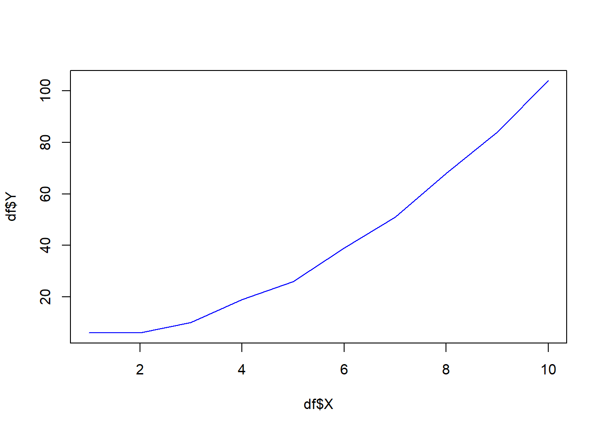

Розділ 3 Базові конструкції мови R: типи та структури даних. Частина 2
Автори: Новоселецький Олександр, Юрій Клебан
3.1 Набори даних
Матеріали розділу у процесі підготовки.
3.2 Вектори (vectors)
3.2.1 Поняття та спосіб представлення
Вектори є найпростішим способом представлення колекції даних. З своїм змістом вектор - це послідовність однорідних елементів. Якщо ж говорити про мову програмування, то вектор - це послідовність елементів одного типу, що розміщені за деяким порядком (індексом).
Вектор прийнято позначати, як x = (x1, x2,…, xn), де х - назва вектора, n - кількість елементів вектора,
3.2.2 Оголошення векторів
Вектор - базовий тип даних у R, що дозволяє записати колекцію елементів одного типу за допомогою c() або без нього, якщо це послідовність значень.
Примітка. По суті функція c() дозволяє об’єднати кілька векторів.
Розглянемо для прикладу звичайну змінну x:
x <- 10По своїй суті x у даному випадку є вектором, що складається з одного значення 10. Ми можемо також записати кілька елементів у змінну x:
x <- c(1, 2, 2.5, 3)
x## [1] 1.0 2.0 2.5 3.0Елементами вектора можуть бути значення будь якого типу: numeric, character, logical тощо:
v1 <- c(1, 3, 4, 6, 7)
v2 <- c(T, F, F, T, F)
v3 <- c("Hello", "my", "friend", "!")Елементами вектора також послідовності, створені на за допомогою функцій rep(), seq() та оператора ::
vtr <- 2:7
vtr## [1] 2 3 4 5 6 7vtr <- 7:2
vtr## [1] 7 6 5 4 3 2Якщо є потреба об’єднати кілька векторів, скористайтеся функцією c():
x <- 2:3
y <- c(4,6,9)
z <- c(x, y, 10:12, 100)
z## [1] 2 3 4 6 9 10 11 12 100Переглянути коротку описову статистику по вектору можна за допомогою функції summary():
summary(z)## Min. 1st Qu. Median Mean 3rd Qu. Max.
## 2.00 4.00 9.00 17.44 11.00 100.003.2.3 Операції над векторами
The advantage of using vectors over writing each value in a separate variable is the ability to perform 1 operation on all elements of the vector or on several vectors simultaneously, for example, arithmetic operations of addition or multiplication.
v1 <- c(1, 3, 5)
v1## [1] 1 3 5v1 * 10## [1] 10 30 50From the example described above, it can be understood that the addition operation is essentially a super element sum of vectors when the 1st element of the vector v1 is added to the 1st element of the \(vector2(1 + 2)\) and so on. Thus, the resulting vector will have the same length as the vectors \(v1\) and \(v2\).
However, there may be a situation when one of the vectors has a shorter length or even consists of 1 element:
v1 <- c(1, 3, 5, 7)
v2 <- c(2, 4)
v1 + v2## [1] 3 7 7 11In this case, the number 2 will be added to each element of the vectorv1. In fact, this means that the vector v2 will look like c 2, 2), ie there will be a duplication of values to the length of the vectorv1 and then perform the operation of adding elements. Thus, the resulting vector will have the length of the longest of the vectors.
Consider a more complex case where there are vectors with different numbers of elements other than 1:
v1 <- c(2, 3)
v2 <- c(4, 5, 6, 7)
v3 <- c(1, 8, 9)
v1 + v2 + v3## Warning in v1 + v2 + v3: longer object length is not a multiple of shorter
## object length## [1] 7 16 17 11To begin with, it should be noted that the interpreter warns that the lengths of the vectors are not multiples (if they were vectors of length 2, 4, 8, then there would be no warning).
If you extend each vector to the length of the maximum of them, repeating the elements cyclically, you get a set (marked added elements):
v1 <- c(2, 3,*2,*3)
v2 <- c(4, 5, 6, 7)
v3 <- c(1, 8, 9,*1)Subtraction (-), division(/) and multiplication (*) operations are performed similarly.
The relation operators and logical operators also act element by element with respect to the vector, but the result is a collection (vector) of values of the logical type logical with the values TRUE/FALSE.
Consider an example of finding all elements of the array \(v1\) that are greater than the corresponding index elements of the array \(v2\):
v1 <- c(2, 4, 7, 9, 12)
v2 <- c(6, 4, 6, 7, 1)
v1 > v2## [1] FALSE FALSE TRUE TRUE TRUEIn essence, as a result of execution there is a comparison of each element of both vectors among themselves: 2>6, 4>4, 7>6, 9>7, 12>1.
Therefore, the previously studied operators (arithmetic, logical, relations) can be used to work with vectors as well.
3.2.4 Naming vector elements
In order to understand what vectors mean and what data is often described, analysts need to sign this data.
We will write down information about daily visits to the site by users during the week in the following way:
# Count of unique bank branch visits from Monday to Sunday
data <- c(1245, 2112, 1321, 1231, 2342, 1718, 1980)Next, assign values to the days of the week using the names() function:
names(data) <- c("Monday", "Tuesday", "Wednesday", "Thursday", "Friday", "Saturday", "Sunday")
print(data)## Monday Tuesday Wednesday Thursday Friday Saturday Sunday
## 1245 2112 1321 1231 2342 1718 1980Otherwise, this code could be written as follows:
data <- c(1245, 2112, 1321, 1231, 2342, 1718, 1980)
days <- c("Monday", "Tuesday", "Wednesday", "Thursday", "Friday", "Saturday", "Sunday")
names(data) <- days
data## Monday Tuesday Wednesday Thursday Friday Saturday Sunday
## 1245 2112 1321 1231 2342 1718 1980If we need to get information, for example, about the name of the 4th element of the vector, we can use the code:
names(data)## [1] "Monday" "Tuesday" "Wednesday" "Thursday" "Friday" "Saturday"
## [7] "Sunday"The names() function allows not only to set the values of names for vector elements, but also to obtain information about them.
3.2.5 Access to vector elements
Indexing of elements inside the wind occurs from 1 ton, where n is the number of elements of the vector.
Note. In R, the indexing of array, vector, and all other collection types begins with 1, not with 0.
Consider the previous example:
data <- c(1245, 2112, 1321, 1231, 2342, 1718, 1980)
days <- c("Monday", "Tuesday", "Wednesday", "Thursday", "Friday", "Saturday", "Sunday")
names(data) <- daysIn order to record information only about site visitors on Wednesday, you need to use the operator [] and specify the index of the element in the array:
data[3]## Wednesday
## 1321data[names(data) == 'Wednesday']## Wednesday
## 1321If there is a need to get several elements of the vector that are out of order, you can do it like this:
some_days <- data[c(1, 2, 5)]
some_days## Monday Tuesday Friday
## 1245 2112 2342From the example above it is clear that the indices of the vector data are another vector c(1, 2, 5), so it can be declared as a separate variable:
indexes <- c(1, 2, 5)
some_days <- data[indexes]
some_days## Monday Tuesday Friday
## 1245 2112 2342If there is a need to obtain information about several elements that are placed in a row, then for convenience (and in the case when such an array consists, for example, of 1000+ elements) use the operator :, for example:
working_days <- data[1:5]
working_days## Monday Tuesday Wednesday Thursday Friday
## 1245 2112 1321 1231 2342Thus, all working days of the week are selected for the working_days vector.
3.2.6 Useful functions
Let’s take a look at some useful features that will simplify working with vectors. For further calculations we will use two vectors A andB:
A <- c(3, 5, 8, 2, 5, 4, 2)
B <- c(3, NA, 1, NA, 6, 4, 5)
A## [1] 3 5 8 2 5 4 2B## [1] 3 NA 1 NA 6 4 5Function sum(). This function is used to find the sum of the elements of the collection:
sum(A)## [1] 29sum(B)## [1] NAAn interesting point is that in the presence of gaps in the data (value NA) the calculation of the amount is impossible. In this case, the functions can take the additional parameter na.rm = T, whereT is an abbreviation of TRUE, which indicates the need to remove gaps in the data before performing the operation
Note. You should check the documentation for such a parameter in the function. If it is not present, then it is necessary to carry out cleaning in other ways before work with the data.
sum(B, na.rm = T)## [1] 19The mean () function is used to find the arithmetic mean of numbers:
mean(A)## [1] 4.142857mean(B, na.rm = T)## [1] 3.8min() and max() functions allow you to find the minimum and maximum values, respectively:
min(A)## [1] 2max(A)## [1] 8Also to work in R there is a large number of built-in implemented functions to perform statistical, econometric and other research in the field of economics and beyond. Try the sd(), cov(), cor() functions.
The length () function helps to determine the “length” of a vector, ie the number of elements:
length(A)## [1] 7length(B)## [1] 7The unique () function identifies unique elements in an array:
A## [1] 3 5 8 2 5 4 2unique(A)## [1] 3 5 8 2 4print("---")## [1] "---"B## [1] 3 NA 1 NA 6 4 5unique(B)## [1] 3 NA 1 6 4 5The intersect() function allows you to find common elements of two vectors, so for vectors A andB common values are 3, 4 and5:
A## [1] 3 5 8 2 5 4 2B## [1] 3 NA 1 NA 6 4 5intersect(A, B)## [1] 3 5 4Conversely, The union() function allows you to combine elements of both sets / vectors:
A## [1] 3 5 8 2 5 4 2B## [1] 3 NA 1 NA 6 4 5union(A, B)## [1] 3 5 8 2 4 NA 1 6Try to understand the operation of the functions setdiff(), setequal(), is.element().
_I recommend reading the short materials here: https://stat.ethz.ch/R-manual/R-devel/library/base/html/sets.html._
3.2.7 Correction of data (NA, NaN, Inf)
In the process of working with data there are problems associated with the correctness of their reading, conversion and operations on them. For example, an incorrect entry in the field of integer type " +10 " instead of 10 may result in conversion toNaN or division by 0 toInf.
Before using numerical and other data, the stage of cleaning and replacement of values is usually performed depending on the tasks of programming / research. In R the following types of the missed values are possible:
- NA ** - Not Available.
- NaN ** - Not a Number.
- Inf ** - Infinity (infinity, can be with the sign+and-).
Let’s start with vector:
vtr <- c(1, -2, NA, NaN, Inf, 1223, -Inf, NA, 21)
vtr## [1] 1 -2 NA NaN Inf 1223 -Inf NA 21You can check a single value for a space with the functions is.na(), is.nan(), is.infinite(), is.finite().
is.na(vtr)## [1] FALSE FALSE TRUE TRUE FALSE FALSE FALSE TRUE FALSEis.nan(vtr)## [1] FALSE FALSE FALSE TRUE FALSE FALSE FALSE FALSE FALSEis.infinite(vtr)## [1] FALSE FALSE FALSE FALSE TRUE FALSE TRUE FALSE FALSEis.finite(vtr) # if infinite == TRUE => finite == FALSE :)## [1] TRUE TRUE FALSE FALSE FALSE TRUE FALSE FALSE TRUEThen replacement of values can be executed as follows (we will replace all NA and Nan with 1000):
vtr[is.na(vtr)] <- 1000
vtr## [1] 1 -2 1000 1000 Inf 1223 -Inf 1000 21## Nan also replaced with is.na()!!!And then replace Inf with the maximum value in the vector, and -Inf with the minimum:
vtr[is.nan(vtr)] <- 500
vtr## [1] 1 -2 1000 1000 Inf 1223 -Inf 1000 21vtr[is.na(vtr)] <- 1000
vtr## [1] 1 -2 1000 1000 Inf 1223 -Inf 1000 21## Nan also replaced with is.na()!!!And then replace Inf with the maximum value in the vector, and -Inf with the minimum:
vtr <- c(1, -2, NA, NaN, Inf, 1223, -Inf, NA, 21)
vtr## [1] 1 -2 NA NaN Inf 1223 -Inf NA 21is.infinite(vtr)## [1] FALSE FALSE FALSE FALSE TRUE FALSE TRUE FALSE FALSE!is.infinite(vtr)## [1] TRUE TRUE TRUE TRUE FALSE TRUE FALSE TRUE TRUEvtr[!is.infinite(vtr)]## [1] 1 -2 NA NaN 1223 NA 21max(vtr[!is.infinite(vtr)], na.rm = T)## [1] 1223max(vtr, na.rm = T)## [1] Infmin(vtr, na.rm = T)## [1] -Infvtr[vtr == Inf] <- max(vtr)
vtr[vtr == -Inf] <- min(vtr)
vtr## [1] 1 -2 NA NaN NA 1223 NA NA 21If you want to replace the value in Inf regardless of the sign, you can useis.infinite().
3.2.8 Tasks
Task 1
- Create vector of 10 random number in range \([10;100]\)
- Replace all odd numbers with NA
- Replace all NA with average value
Solution
x <- sample(1:100, size = 10)
x## [1] 76 73 7 59 15 93 99 40 42 55x[x %% 2 != 0] <- NA
x## [1] 76 NA NA NA NA NA NA 40 42 NAx[is.na(x)] <- mean(x, na.rm = T)
x## [1] 76.00000 52.66667 52.66667 52.66667 52.66667 52.66667 52.66667 40.00000
## [9] 42.00000 52.666673.3 Matrices
3.3.1 Creating matrices
Matrix - a collection of elements of the same type (numeric,character, logical) with a fixed set of rows and columns. In the case where the matrix has only rows and columns, it is a two-dimensional data array.
The matrix is created using the matrix() function:
matrix(1:10, byrow = TRUE, nrow = 2)## [,1] [,2] [,3] [,4] [,5]
## [1,] 1 2 3 4 5
## [2,] 6 7 8 9 10where 1:10 - a set of elements of the matrix, it can also be a pre-formed vector (entered, by calculation, from a file, etc.), byrow = TRUE - means that the elements in the matrix will be written in rows, so in the pedestrian line contains the value 1:5, and the second 6:10 (if we need to write information on the lines then we should use byrow = FASLE), nrow - the number of rows of the matrix.
sales1 <- c(12, 14, 15)
sales2 <- c(22, 15, 21)
sales <- c(sales1, sales2)
m <- matrix(sales, byrow= T, nrow = 2)
m## [,1] [,2] [,3]
## [1,] 12 14 15
## [2,] 22 15 213.3.2 Naming matrices
To specify the names of rows and columns of the matrix, use the functions rownames() and colnames():
m <- matrix(1:9, nrow = 3)
rownames(m) <- c("row1", "row2", "row3")
colnames(m) <- c("c1", "c2", "c3")
m## c1 c2 c3
## row1 1 4 7
## row2 2 5 8
## row3 3 6 9Add rows and columns
Special methods cbind/rbind are used to change the number of elements in rows and columns of matrices, as well as to quickly combine them.
The cbind function allows you to add one or more matrices and/or vectors behind one of the columns. That is, there is not a simple connection, but a comparison by key field. Consider an example:
m1 <- matrix(c(1:3, 101:103), nrow = 3)
colnames(m1) <- c("A", "B")
m2 <- matrix(c(201:203, 1001:1003), nrow = 3)
colnames(m2) <- c("C", "D")
m_bind <- cbind(m1, m2)
m1## A B
## [1,] 1 101
## [2,] 2 102
## [3,] 3 103m2## C D
## [1,] 201 1001
## [2,] 202 1002
## [3,] 203 1003m_bind## A B C D
## [1,] 1 101 201 1001
## [2,] 2 102 202 1002
## [3,] 3 103 203 10033.3.3 Access to matrix elements
The elements of the matrix are accessed by the index of rows and columns. You can select ranges in a similar way to vectors.
Let’s look at an example:
m <- matrix(11:25, nrow = 3)
m## [,1] [,2] [,3] [,4] [,5]
## [1,] 11 14 17 20 23
## [2,] 12 15 18 21 24
## [3,] 13 16 19 22 25To display the 10th element of the matrix, you can use the entries (note that the account is from the right left corner of the columns):
m[10] ## [1] 20m[[10]]## [1] 20To display the same element using row and column indexes, write as follows:
# Row #1
# Column #4
m[1,4]## [1] 20Question: What record should you use ti get 18?
Answer: m[2,3]
m[2,3]## [1] 18If you want to output / use an entire row or a whole column, then the block with the index of unnecessary dimensionality can be left blank:
m[1, ] # first row only## [1] 11 14 17 20 23m[c(1,3), ] # first and third row only## [,1] [,2] [,3] [,4] [,5]
## [1,] 11 14 17 20 23
## [2,] 13 16 19 22 25m[, 1] # first column only## [1] 11 12 13m[, c(1,3)] # first and third column only## [,1] [,2]
## [1,] 11 17
## [2,] 12 18
## [3,] 13 19You can also specify a list of rows and columns to be output / received simultaneously:
m[c(1,3), 2:4]## [,1] [,2] [,3]
## [1,] 14 17 20
## [2,] 16 19 22You can exclude individual columns or rows by using indexes with minus signs (-):
m[-1, c(-2:-3)]## [,1] [,2] [,3]
## [1,] 12 21 24
## [2,] 13 22 253.3.4 Useful functions
Matrix dimmentions
To obtain information about the dimensions of the table, there are special functions: nrow(), ncol(), dim():
# Decalre matrix
m <- matrix(1:15, ncol = 3)
m## [,1] [,2] [,3]
## [1,] 1 6 11
## [2,] 2 7 12
## [3,] 3 8 13
## [4,] 4 9 14
## [5,] 5 10 15print(paste("Rows:", nrow(m)))## [1] "Rows: 5"print(paste("Cols:", ncol(m)))## [1] "Cols: 3"print(paste("Dim:", paste0(dim(m), collapse = " x ")))## [1] "Dim: 5 x 3"Using nrow() andncol() allows you to access the last row and column of the matrix, respectively:
m[nrow(m), ] # last row## [1] 5 10 15m[, ncol(m)] # last colum## [1] 11 12 13 14 153.4 Factors
Factors in R programming allow you to represent a vector of values as categorical values, rather than just a set of text data or numbers. The advantage of the categorical data type is that the element can take only a limited number of values, and not any value that allows the data type.
For example, a numeric vector may contain an infinitely large variation of the values c(1, 0.021, 192.1444, …, etc.), the character sets may also be different c (“sdf & Tg6,”“sdf * Y & 65”). The number of combinations of such vectors is very large.
In the case of categories, we are talking about certain fixed values. A good example is forms that are filled out on sites with drop-down lists, where the user cannot enter a value, but only select from an existing list. So in the gender field there is usually a limited set of possible options: Male,Female, Other. The user can select only one of these values and does not have the ability to enter something else (this is an example, each resource can make different forms for users).
Creation of factors in R occurs by means of function factor():
gender <- c("Male", "Female", "Other", "Male", "Female", "Male", "Female", "Female")
gender ## [1] "Male" "Female" "Other" "Male" "Female" "Male" "Female" "Female"gender_factor <- factor(gender)
gender_factor## [1] Male Female Other Male Female Male Female Female
## Levels: Female Male OtherWhen creating a factor, each unique element gets its own digital? (from the outside it looks like this, it needs to be clarified) value inside the collection, this value is called the level (level). In the previous example, the variable gender _factor received the levels Female, Male, Other in alphabetical order. If we convert factors to numbers, we get:
as.numeric(gender_factor)## [1] 2 1 3 2 1 2 1 1gender Thus it is clear that Female = 1, Male = 2, Other = 3. Consider a situation where we get data in which the order of values in the factor collection is different, for example, we need to specify so that Male = 1, Female = 2, Other = 3:
gender <- c("Male", "Female", "Other", "Male", "Female", "Male", "Female", "Female")
gender_factor <- factor(gender, levels = c("Male", "Female", "Other"))
gender_factor## [1] Male Female Other Male Female Male Female Female
## Levels: Male Female Otherlvl <- levels(gender_factor) # read levels of factor
seq_along(lvl)## [1] 1 2 3as.integer(lvl)## Warning: NAs introduced by coercion## [1] NA NA NAas.numeric(gender_factor)## [1] 1 2 3 1 2 1 2 2Now the order of the levels corresponds to ours and this will allow us to successfully combine our collection with similar ones that have the same set of values.
Sometimes it is necessary to change not only the order of the elements in the factorial collection, but also their names. Let’s consider a situation when we need to rename values Male,Female, Other inM, F,O:
gender <- c("Male", "Female", "Other", "Male", "Female", "Male", "Female", "Female")
gender_factor <- factor(gender, levels = c("Male", "Female", "Other"))
levels(gender_factor) <- c("M", "F", "O")
gender_factor## [1] M F O M F M F F
## Levels: M F OBut you should check you type with is.factor() before converting to numbers:
cities <- c("Rivne", "Ostroh", "Zdolbuniv", "Dubno", "Sarny")
cities_as_factors <- factor(cities)
as.numeric(cities_as_factors)## [1] 3 2 5 1 4as.numeric(cities) # you cannot convert characters vector to numerics## Warning: NAs introduced by coercion## [1] NA NA NA NA NA3.5 Dataframes
Data frames are the most popular data structure in R, becouse it allows collect data with different columns type in one object and quickly manipulate it.
A data frame, a matrix-like structure whose columns may be of differing types (numeric, logical, factor and character and so on).
The function data.frame() creates data frames, tightly coupled collections of variables which share many of the properties of matrices and of lists, used as the fundamental data structure by most of R’s modeling software.
Syntax
{r} data.frame(…, row.names = NULL, check.rows = FALSE, check.names = TRUE, fix.empty.names = TRUE, stringsAsFactors = FALSE)
Arguments (top useful)
- … - these arguments are of either the form value or tag = value. Component names are created based on the tag (if present) or the deparsed argument itself.
- row.names - NULL or a single integer or character string specifying a column to be used as row names, or a character or integer vector giving the row names for the data frame.
- stringsAsFactors - logical: should character vectors be converted to factors? The ‘factory-fresh’ default has been TRUE previously but has been changed to FALSE
Details
A data frame is a list of variables of the same number of rows with unique row names, given class data.frame. If no variables are included, the row names determine the number of rows.
data.frame converts each of its arguments to a data frame by calling as.data.frame(optional = TRUE). As that is a generic function, methods can be written to change the behaviour of arguments according to their classes: R comes with many such methods. Character variables passed to data.frame are converted to factor columns unless protected argument stringsAsFactors is false. If a list or data frame or matrix is passed to data.frame it is as if each component or column had been passed as a separate argument.
3.5.1 Creating Data Frames
Data frames are usually created by reading in a dataset from file, scraping from websites. However, data frames can also be created explicitly with the data.frame() function or they can be coerced from other types of objects like lists. In this case I’ll create a simple data frame df and assess its basic structure:
df <- data.frame(id = 1:5,
char_col = c("a", "b", "c", "d", "e"),
log_col = c(T,T,T,F,T),
double_col = c(2.1, 1, 0.5, pi, 12.7))
df## id char_col log_col double_col
## 1 1 a TRUE 2.100000
## 2 2 b TRUE 1.000000
## 3 3 c TRUE 0.500000
## 4 4 d FALSE 3.141593
## 5 5 e TRUE 12.700000# assess the structure of a data frame
str(df)## 'data.frame': 5 obs. of 4 variables:
## $ id : int 1 2 3 4 5
## $ char_col : chr "a" "b" "c" "d" ...
## $ log_col : logi TRUE TRUE TRUE FALSE TRUE
## $ double_col: num 2.1 1 0.5 3.14 12.7# number of rows
nrow(df)## [1] 5# number of columns
ncol(df)## [1] 4df <- data.frame(i = 1:5,
char_col = c("a", "b", "c", "d", "e"),
log_col = c(T,T,T,F,T),
double_col = c(2.1, 1, 0.5, pi, 12.7),
stringsAsFactors = TRUE) # warning it depends on local settings of R
df## i char_col log_col double_col
## 1 1 a TRUE 2.100000
## 2 2 b TRUE 1.000000
## 3 3 c TRUE 0.500000
## 4 4 d FALSE 3.141593
## 5 5 e TRUE 12.700000Creating data.frames from lists (P.S. lists explained in next chapter):
demo_list <- list(int_col = v_int,
char_col = v_char,
log_col = v_log,
double_col = v_double)
as.data.frame(demo_list)Matrix can be base for data frame too:
demo_matrix <- matrix(100:119, nrow = 5, ncol = 4)
demo_matrix## [,1] [,2] [,3] [,4]
## [1,] 100 105 110 115
## [2,] 101 106 111 116
## [3,] 102 107 112 117
## [4,] 103 108 113 118
## [5,] 104 109 114 119as.data.frame(demo_matrix)## V1 V2 V3 V4
## 1 100 105 110 115
## 2 101 106 111 116
## 3 102 107 112 117
## 4 103 108 113 118
## 5 104 109 114 1193.5.2 Extending data frames
You can add rows and columns to data frame. Merging two data frames by selected column values awailable too.
cbind() adds new column
df <- data.frame(A1 = c("A", "B", "C"),
A2 = c("D", "E", "F"))
df## A1 A2
## 1 A D
## 2 B E
## 3 C FA3 = c(1, 2, 3)
cbind(df, A3)## A1 A2 A3
## 1 A D 1
## 2 B E 2
## 3 C F 3colnames(df)## [1] "A1" "A2"colnames(df) <- c("B1", "B2")
colnames(df)## [1] "B1" "B2"rbind() adds new row
letters_frame <- data.frame(A1 = c("A", "B", "C"),
A2 = 1:3)
letters_frame## A1 A2
## 1 A 1
## 2 B 2
## 3 C 3next_row = c("D", 4) # data types by row should be the same as in initial data frame
rbind(letters_frame, next_row)## A1 A2
## 1 A 1
## 2 B 2
## 3 C 3
## 4 D 43.5.3 Merge DF
Data frames could me merged by key with merge():
df1 <- data.frame(Id = c(1:4),
Name = c("Nick", "Jake", "Jane", "Mary"))
df1## Id Name
## 1 1 Nick
## 2 2 Jake
## 3 3 Jane
## 4 4 Marydf2 <- data.frame(Id = c(2, 1, 3, 5), # defferent order from Id in df1
Age = c(34, 21, 45, 20))
df2## Id Age
## 1 2 34
## 2 1 21
## 3 3 45
## 4 5 20df_final <- merge(df1, df2, by = "Id", all.x = F, all.y = F)
df_final## Id Name Age
## 1 1 Nick 21
## 2 2 Jake 34
## 3 3 Jane 453.5.4 Subsetting Data Frames
Data frames possess the characteristics of both lists and matrices: if you subset with a single vector, they behave like lists and will return the selected columns with all rows; if you subset with two vectors, they behave like matrices and can be subset by row and column:
df <- data.frame(int_col = 1:5,
char_col = c("a", "b", "c", "d", "e"),
log_col = c(T,T,T,F,T),
double_col = c(2.1, 1, 0.5, pi, 12.7),
row.names = paste0("row_", 1:5), # setting row names
stringsAsFactors = TRUE) # warning it depends on local settings of R
df## int_col char_col log_col double_col
## row_1 1 a TRUE 2.100000
## row_2 2 b TRUE 1.000000
## row_3 3 c TRUE 0.500000
## row_4 4 d FALSE 3.141593
## row_5 5 e TRUE 12.700000# select columns using $ sign
df$log_col## [1] TRUE TRUE TRUE FALSE TRUE# subsetting by row numbers
df[1, ] # first row## int_col char_col log_col double_col
## row_1 1 a TRUE 2.1df[nrow(df), ] # last row## int_col char_col log_col double_col
## row_5 5 e TRUE 12.7df[-1, ] # all except first row## int_col char_col log_col double_col
## row_2 2 b TRUE 1.000000
## row_3 3 c TRUE 0.500000
## row_4 4 d FALSE 3.141593
## row_5 5 e TRUE 12.700000# subsetting by row names
df[c("row_4", "row_5"), ]## int_col char_col log_col double_col
## row_4 4 d FALSE 3.141593
## row_5 5 e TRUE 12.700000# subsetting columns like a list
df[, c("log_col", "double_col")]## log_col double_col
## row_1 TRUE 2.100000
## row_2 TRUE 1.000000
## row_3 TRUE 0.500000
## row_4 FALSE 3.141593
## row_5 TRUE 12.700000# subset for both rows and columns
df[2:5, c(1, 3:4)]## int_col log_col double_col
## row_2 2 TRUE 1.000000
## row_3 3 TRUE 0.500000
## row_4 4 FALSE 3.141593
## row_5 5 TRUE 12.700000# select only with log_col == TRUE
df[df$double_col > 1, ]## int_col char_col log_col double_col
## row_1 1 a TRUE 2.100000
## row_4 4 d FALSE 3.141593
## row_5 5 e TRUE 12.700000df[!df$log_col, ]## int_col char_col log_col double_col
## row_4 4 d FALSE 3.141593"s" %in% c("s", "t")## [1] TRUE# select only with char_col == 'a', 'e'
chars <- df$char_col %in% c("a", "e")
chars## [1] TRUE FALSE FALSE FALSE TRUEsum(chars)## [1] 2df[chars, ] # %in% operator for check multuiple values## int_col char_col log_col double_col
## row_1 1 a TRUE 2.1
## row_5 5 e TRUE 12.7# select only with double_col > 1 and log_col == TRUE
df[df$log_col == TRUE & df$double_col > 1, ]## int_col char_col log_col double_col
## row_1 1 a TRUE 2.1
## row_5 5 e TRUE 12.7# select only specific columns with double_col > 1 and log_col == TRUE
df[df$log_col == TRUE & df$double_col > 1, c("log_col", "int_col", "double_col")]## log_col int_col double_col
## row_1 TRUE 1 2.1
## row_5 TRUE 5 12.73.5.5 Order data.frame
Let’s use our previous sample data.frame but with unordered values:
df <- data.frame(int_col = c(1, 5, 3, 4, 2),
char_col = c("b", "a", "a", "d", "e"),
log_col = c(T,T,T,F,T),
double_col = c(2.1, 1, 0.5, pi, 12.7),
row.names = paste0("row_", 1:5), # setting row names
stringsAsFactors = TRUE) # warning it depends on local settings of R
df## int_col char_col log_col double_col
## row_1 1 b TRUE 2.100000
## row_2 5 a TRUE 1.000000
## row_3 3 a TRUE 0.500000
## row_4 4 d FALSE 3.141593
## row_5 2 e TRUE 12.700000You can use order() function for sorting data.frames.
# sort by int_col
order(df$char_col)## [1] 2 3 1 4 5order(df$int_col)## [1] 1 5 3 4 2df[order(df$char_col),]## int_col char_col log_col double_col
## row_2 5 a TRUE 1.000000
## row_3 3 a TRUE 0.500000
## row_1 1 b TRUE 2.100000
## row_4 4 d FALSE 3.141593
## row_5 2 e TRUE 12.700000Use - minus to sort descending
# sort by double_col
# rev
df[rev(order(df$int_col)), ]## int_col char_col log_col double_col
## row_2 5 a TRUE 1.000000
## row_4 4 d FALSE 3.141593
## row_3 3 a TRUE 0.500000
## row_5 2 e TRUE 12.700000
## row_1 1 b TRUE 2.100000You can also sor by multiple columns with order(column1, column2) or order(column1, -column2).
3.5.6 Manipulating data.frames
3.5.7 Tasks on data.frames
Task 1 Write a code evaluates $y = x^2 + e, where x is a random number in range [0; 1].
Print calculation result as data.frame with columns X, E, Y.
Use plot() funtion to visualize X vs Y as line chart (type = l or b).
Solution
# initiate data.frame
df <- data.frame(X = 1:10,
E = sample(5, 10, replace = T),
Y = NA)
head(df)## X E Y
## 1 1 5 NA
## 2 2 2 NA
## 3 3 1 NA
## 4 4 3 NA
## 5 5 1 NA
## 6 6 3 NAdf$Y <- with(df, X^2 + E)
head(df)## X E Y
## 1 1 5 6
## 2 2 2 6
## 3 3 1 10
## 4 4 3 19
## 5 5 1 26
## 6 6 3 39plot(df$X, df$Y, type="l", col = "blue")
Task 2
- Install package and load package ISLR
- Save dataset Credit into variable credit_data.
- Check dataset structure with str() function.
- Convert Student status “yes/no” to 1/0
- Order dataset by Rating descending
- Filter only Age > 50 with Rating > 400, how many records do you get?
- Evaluate average Income for Married = YES Married = NO with Age in range [20,30] 7.1 Make the same for Age [30;40] Any conclusion?
Solution
# 1. install.package ISLR
#install.packages("ISLR")
library(ISLR)# 2. Save dataset `Credit` into variable `credit_data`.
credit_data <- ISLR::Credit
head(credit_data, 3)## ID Income Limit Rating Cards Age Education Gender Student Married Ethnicity
## 1 1 14.891 3606 283 2 34 11 Male No Yes Caucasian
## 2 2 106.025 6645 483 3 82 15 Female Yes Yes Asian
## 3 3 104.593 7075 514 4 71 11 Male No No Asian
## Balance
## 1 333
## 2 903
## 3 580# 3. Check dataset structure with `str()` function.
str(credit_data)## 'data.frame': 400 obs. of 12 variables:
## $ ID : int 1 2 3 4 5 6 7 8 9 10 ...
## $ Income : num 14.9 106 104.6 148.9 55.9 ...
## $ Limit : int 3606 6645 7075 9504 4897 8047 3388 7114 3300 6819 ...
## $ Rating : int 283 483 514 681 357 569 259 512 266 491 ...
## $ Cards : int 2 3 4 3 2 4 2 2 5 3 ...
## $ Age : int 34 82 71 36 68 77 37 87 66 41 ...
## $ Education: int 11 15 11 11 16 10 12 9 13 19 ...
## $ Gender : Factor w/ 2 levels " Male","Female": 1 2 1 2 1 1 2 1 2 2 ...
## $ Student : Factor w/ 2 levels "No","Yes": 1 2 1 1 1 1 1 1 1 2 ...
## $ Married : Factor w/ 2 levels "No","Yes": 2 2 1 1 2 1 1 1 1 2 ...
## $ Ethnicity: Factor w/ 3 levels "African American",..: 3 2 2 2 3 3 1 2 3 1 ...
## $ Balance : int 333 903 580 964 331 1151 203 872 279 1350 ...# Convert Student status "yes/no" to 1/0
as.numeric(credit_data$Student) - 1## [1] 0 1 0 0 0 0 0 0 0 1 0 0 0 0 0 0 0 0 0 0 0 0 0 0 0 0 1 0 0 0 0 0 0 0 0 1 0
## [38] 0 0 0 0 1 0 0 0 0 1 1 0 1 0 0 0 0 0 0 0 0 0 0 0 0 0 0 0 0 0 0 0 0 0 0 0 0
## [75] 0 0 1 0 0 0 0 0 0 0 0 0 0 0 0 0 0 0 0 0 0 0 1 0 1 0 0 1 1 0 0 0 0 0 0 0 0
## [112] 0 0 0 0 0 0 0 0 0 0 0 0 0 0 0 1 0 1 0 1 0 0 0 0 0 0 0 0 0 1 0 0 0 0 0 0 0
## [149] 0 0 0 0 1 0 0 0 0 1 0 0 0 0 0 0 0 0 0 0 0 0 0 0 0 0 0 0 0 0 0 0 0 0 0 0 0
## [186] 0 0 0 0 0 0 1 0 0 0 0 0 0 0 0 0 0 0 1 0 0 0 1 0 0 0 0 0 0 0 0 0 0 1 0 1 0
## [223] 1 0 0 0 0 0 0 0 0 0 0 0 0 0 0 0 0 0 0 0 1 0 0 0 0 0 1 1 0 0 0 0 0 0 0 0 0
## [260] 0 0 1 0 0 0 0 0 0 0 0 0 0 1 1 0 0 0 0 0 1 0 0 0 0 0 0 0 0 0 0 0 0 0 0 0 0
## [297] 0 0 0 0 0 0 0 0 0 0 0 0 0 0 1 0 0 0 0 0 0 0 0 0 1 0 0 0 1 0 0 0 0 0 1 0 0
## [334] 0 0 0 0 0 0 0 0 0 0 0 0 0 0 0 0 0 0 0 0 0 0 0 0 0 0 0 0 0 0 0 0 1 0 0 0 0
## [371] 0 0 1 1 0 0 0 0 0 0 0 0 1 0 0 0 0 0 0 0 0 0 0 0 0 0 0 0 0 0credit_data$Student <- as.character(credit_data$Student) # convert to character first / factors
credit_data$Student <- ifelse(credit_data$Student == "Yes", 1, 0)
head(credit_data)## ID Income Limit Rating Cards Age Education Gender Student Married Ethnicity
## 1 1 14.891 3606 283 2 34 11 Male 0 Yes Caucasian
## 2 2 106.025 6645 483 3 82 15 Female 1 Yes Asian
## 3 3 104.593 7075 514 4 71 11 Male 0 No Asian
## 4 4 148.924 9504 681 3 36 11 Female 0 No Asian
## 5 5 55.882 4897 357 2 68 16 Male 0 Yes Caucasian
## 6 6 80.180 8047 569 4 77 10 Male 0 No Caucasian
## Balance
## 1 333
## 2 903
## 3 580
## 4 964
## 5 331
## 6 1151# 5. Order dataset by `Rating` descending
credit_data <- credit_data[order(-credit_data$Rating), ]
head(credit_data)## ID Income Limit Rating Cards Age Education Gender Student Married
## 324 324 182.728 13913 982 4 98 17 Male 0 Yes
## 29 29 186.634 13414 949 2 41 14 Female 0 Yes
## 356 356 180.682 11966 832 2 58 8 Female 0 Yes
## 86 86 152.298 12066 828 4 41 12 Female 0 Yes
## 294 294 140.672 11200 817 7 46 9 Male 0 Yes
## 185 185 158.889 11589 805 1 62 17 Female 0 Yes
## Ethnicity Balance
## 324 Caucasian 1999
## 29 African American 1809
## 356 African American 1405
## 86 Asian 1779
## 294 African American 1677
## 185 Caucasian 1448# 6. Filter only `Age > 50` with `Rating > 400`
credict_data_filtered <- credit_data[credit_data$Age > 50 & credit_data$Rating > 400, ]
head(credict_data_filtered)## ID Income Limit Rating Cards Age Education Gender Student Married
## 324 324 182.728 13913 982 4 98 17 Male 0 Yes
## 356 356 180.682 11966 832 2 58 8 Female 0 Yes
## 185 185 158.889 11589 805 1 62 17 Female 0 Yes
## 348 348 160.231 10748 754 2 69 17 Male 0 No
## 175 175 121.834 10673 750 3 54 16 Male 0 No
## 391 391 135.118 10578 747 3 81 15 Female 0 Yes
## Ethnicity Balance
## 324 Caucasian 1999
## 356 African American 1405
## 185 Caucasian 1448
## 348 Caucasian 1192
## 175 African American 1573
## 391 Asian 1393nrow(credict_data_filtered)## [1] 73#7. Evaluate average `Income` for `Married = YES` `Married = NO` with age in rage [20,30]
# 7.1 Make the same for Age [30;40]
married <- with(credit_data, credit_data[(Age>=20 & Age <=30) & Married == "Yes", ])
head(married)## ID Income Limit Rating Cards Age Education Gender Student Married
## 11 11 63.095 8117 589 4 30 14 Male 0 Yes
## 114 114 69.251 6386 474 4 30 12 Female 0 Yes
## 45 45 31.861 6375 469 3 25 16 Female 0 Yes
## 19 19 49.570 6384 448 1 28 9 Female 0 Yes
## 44 44 36.929 6257 445 1 24 14 Female 0 Yes
## 151 151 63.931 5728 435 3 28 14 Female 0 Yes
## Ethnicity Balance
## 11 Caucasian 1407
## 114 Asian 768
## 45 Caucasian 1120
## 19 Asian 891
## 44 Asian 976
## 151 African American 581not_married <- credit_data[credit_data$Age %in% c(20:30) & credit_data$Married == "No", ]
head(not_married)## ID Income Limit Rating Cards Age Education Gender Student Married
## 212 212 29.567 5309 397 3 25 15 Male 0 No
## 94 94 16.479 5435 388 2 26 16 Male 0 No
## 272 272 44.978 4866 347 1 30 10 Female 0 No
## 206 206 10.793 3878 321 8 29 13 Male 0 No
## 179 179 28.316 4391 316 2 29 10 Female 0 No
## 186 186 30.420 4442 316 1 30 14 Female 0 No
## Ethnicity Balance
## 212 Caucasian 799
## 94 African American 937
## 272 Caucasian 436
## 206 Caucasian 638
## 179 Caucasian 453
## 186 African American 450mean(married$Income) # is it better to be merried? :)## [1] 35.25635mean(not_married$Income)## [1] 25.161833.6 Lists
Lists are the R objects which contain elements of different types like − numbers, strings, vectors and another list inside it. A list can also contain a matrix or a function as its elements. List is created using list() function.
Before start lest see one more package for working with date lubridate. It has a lot of functions for date parsing, manipulating and other. Check it with:
#install.packages("lubridate")
??lubridate## starting httpd help server ... doneFor our sample we need function ymd() that parse charater date from format like “2012-10-25.”
library(lubridate)##
## Attaching package: 'lubridate'## The following objects are masked from 'package:base':
##
## date, intersect, setdiff, uniondate1 <- ymd("2021-05-25")
date2 <- ymd("2021-05-27")
date1## [1] "2021-05-25"date2## [1] "2021-05-27"You can also use ymdhms() to parse date and time correctly.
datetime <- ymd_hms("2021-05-25 11:05:12", tz = "UTC") # wee need this for client transactions fix
datetime## [1] "2021-05-25 11:05:12 UTC"3.6.1 Creating a List
Following is an example to create a list containing vectors, strings, numbers and a logical values. Our list will describe a model of banks client:
# initial values
set.seed(1) # for fixing pseudo-random
client_name <- "John Doe"
services <- c("credit", "deposite", "online-app")
is_active <- TRUE
transactions <- data.frame(contract_id = sample(10000:99999, size = 2, replace = T),# random numbers
datetime = c(ymd_hms("2021-05-25 11:05:12"),
ymd_hms("2021-05-25 11:07:14"),
ymd_hms("2021-05-25 11:08:02"),
ymd_hms("2021-05-25 11:12:45"),
ymd_hms("2021-05-25 11:47:00"),
ymd_hms("2021-05-25 11:48:08")),
oper_type = sample(0:1, size=6, replace = T), # 1 for debet, 0 for credet
amount = round(sample(1:1000, size = 6) + runif(6),2))
#change AMOUNT to minus for debet (opertype == 1
transactions$amount <- ifelse(transactions$oper_type == 1, (-1)*transactions$amount, transactions$amount)
transactions## contract_id datetime oper_type amount
## 1 34387 2021-05-25 11:05:12 1 -187.72
## 2 69520 2021-05-25 11:07:14 0 307.99
## 3 34387 2021-05-25 11:08:02 0 993.38
## 4 69520 2021-05-25 11:12:45 0 597.78
## 5 34387 2021-05-25 11:47:00 1 -277.93
## 6 69520 2021-05-25 11:48:08 1 -874.21# creating list of signle objects, vector and dataframe
list_data <- list(client_name, is_active, services, transactions)
list_data## [[1]]
## [1] "John Doe"
##
## [[2]]
## [1] TRUE
##
## [[3]]
## [1] "credit" "deposite" "online-app"
##
## [[4]]
## contract_id datetime oper_type amount
## 1 34387 2021-05-25 11:05:12 1 -187.72
## 2 69520 2021-05-25 11:07:14 0 307.99
## 3 34387 2021-05-25 11:08:02 0 993.38
## 4 69520 2021-05-25 11:12:45 0 597.78
## 5 34387 2021-05-25 11:47:00 1 -277.93
## 6 69520 2021-05-25 11:48:08 1 -874.213.6.2 Naming List Elements
Its better to name elements in list:
names(list_data) <- c("ClientName", "IsActive", "Services", "Transactions")
list_data## $ClientName
## [1] "John Doe"
##
## $IsActive
## [1] TRUE
##
## $Services
## [1] "credit" "deposite" "online-app"
##
## $Transactions
## contract_id datetime oper_type amount
## 1 34387 2021-05-25 11:05:12 1 -187.72
## 2 69520 2021-05-25 11:07:14 0 307.99
## 3 34387 2021-05-25 11:08:02 0 993.38
## 4 69520 2021-05-25 11:12:45 0 597.78
## 5 34387 2021-05-25 11:47:00 1 -277.93
## 6 69520 2021-05-25 11:48:08 1 -874.21You can extend list “on fly” with $:
list_data$ClientName## [1] "John Doe"list_data$ClientId <- 11125489656
list_data## $ClientName
## [1] "John Doe"
##
## $IsActive
## [1] TRUE
##
## $Services
## [1] "credit" "deposite" "online-app"
##
## $Transactions
## contract_id datetime oper_type amount
## 1 34387 2021-05-25 11:05:12 1 -187.72
## 2 69520 2021-05-25 11:07:14 0 307.99
## 3 34387 2021-05-25 11:08:02 0 993.38
## 4 69520 2021-05-25 11:12:45 0 597.78
## 5 34387 2021-05-25 11:47:00 1 -277.93
## 6 69520 2021-05-25 11:48:08 1 -874.21
##
## $ClientId
## [1] 111254896563.6.3 Accessing List Elements
For now every element can be viewed with index in [[]] or []:
# access to list element
list_data[1]## $ClientName
## [1] "John Doe"typeof(list_data[1])## [1] "list"# access to object
list_data[[1]]## [1] "John Doe"typeof(list_data[[1]])## [1] "character"Access by $ also anbled:
list_data$Transactions## contract_id datetime oper_type amount
## 1 34387 2021-05-25 11:05:12 1 -187.72
## 2 69520 2021-05-25 11:07:14 0 307.99
## 3 34387 2021-05-25 11:08:02 0 993.38
## 4 69520 2021-05-25 11:12:45 0 597.78
## 5 34387 2021-05-25 11:47:00 1 -277.93
## 6 69520 2021-05-25 11:48:08 1 -874.213.6.4 Manipulating List Elements
Lets continue using out list_data list.
list_data## $ClientName
## [1] "John Doe"
##
## $IsActive
## [1] TRUE
##
## $Services
## [1] "credit" "deposite" "online-app"
##
## $Transactions
## contract_id datetime oper_type amount
## 1 34387 2021-05-25 11:05:12 1 -187.72
## 2 69520 2021-05-25 11:07:14 0 307.99
## 3 34387 2021-05-25 11:08:02 0 993.38
## 4 69520 2021-05-25 11:12:45 0 597.78
## 5 34387 2021-05-25 11:47:00 1 -277.93
## 6 69520 2021-05-25 11:48:08 1 -874.21
##
## $ClientId
## [1] 11125489656We can change data with [] and access with $ symbol.
# changing clint name with index
list_data[1] <- "New Name"
list_data## $ClientName
## [1] "New Name"
##
## $IsActive
## [1] TRUE
##
## $Services
## [1] "credit" "deposite" "online-app"
##
## $Transactions
## contract_id datetime oper_type amount
## 1 34387 2021-05-25 11:05:12 1 -187.72
## 2 69520 2021-05-25 11:07:14 0 307.99
## 3 34387 2021-05-25 11:08:02 0 993.38
## 4 69520 2021-05-25 11:12:45 0 597.78
## 5 34387 2021-05-25 11:47:00 1 -277.93
## 6 69520 2021-05-25 11:48:08 1 -874.21
##
## $ClientId
## [1] 11125489656# changing data with $
list_data$ClientName = "John Doe"
list_data## $ClientName
## [1] "John Doe"
##
## $IsActive
## [1] TRUE
##
## $Services
## [1] "credit" "deposite" "online-app"
##
## $Transactions
## contract_id datetime oper_type amount
## 1 34387 2021-05-25 11:05:12 1 -187.72
## 2 69520 2021-05-25 11:07:14 0 307.99
## 3 34387 2021-05-25 11:08:02 0 993.38
## 4 69520 2021-05-25 11:12:45 0 597.78
## 5 34387 2021-05-25 11:47:00 1 -277.93
## 6 69520 2021-05-25 11:48:08 1 -874.21
##
## $ClientId
## [1] 11125489656Yo can merge lists with c() function. Let’s create new list and attach it to the list_data:
list_2 <- list(Consultant = list(Name = "David Cameron", PhoneNum = "+9562311855"))
list_2## $Consultant
## $Consultant$Name
## [1] "David Cameron"
##
## $Consultant$PhoneNum
## [1] "+9562311855"list_data <- c(list_data, list_2)
list_data## $ClientName
## [1] "John Doe"
##
## $IsActive
## [1] TRUE
##
## $Services
## [1] "credit" "deposite" "online-app"
##
## $Transactions
## contract_id datetime oper_type amount
## 1 34387 2021-05-25 11:05:12 1 -187.72
## 2 69520 2021-05-25 11:07:14 0 307.99
## 3 34387 2021-05-25 11:08:02 0 993.38
## 4 69520 2021-05-25 11:12:45 0 597.78
## 5 34387 2021-05-25 11:47:00 1 -277.93
## 6 69520 2021-05-25 11:48:08 1 -874.21
##
## $ClientId
## [1] 11125489656
##
## $Consultant
## $Consultant$Name
## [1] "David Cameron"
##
## $Consultant$PhoneNum
## [1] "+9562311855"With unlist() you can convert a list to a vector.
list_demo <- list(1:10)
list_demo## [[1]]
## [1] 1 2 3 4 5 6 7 8 9 10class(list_demo)## [1] "list"typeof(list_demo)## [1] "list"list_demo * 5 # error, you cannot use * for listlapply(list_demo, function(c) c*5)## [[1]]
## [1] 5 10 15 20 25 30 35 40 45 50vector_demo <- unlist(list_demo)
vector_demo## [1] 1 2 3 4 5 6 7 8 9 10class(vector_demo)## [1] "integer"typeof(vector_demo)## [1] "integer"vector_demo * 5 # now it works## [1] 5 10 15 20 25 30 35 40 45 503.6.5 TASKS
Task 1
Wrie a function that calculates sum, average, median, min, max of taken vector. Generate sample vector of 10 elements in \([1;100]\).
Solution
x <- sample(10:100, size = 10)
print(x)## [1] 94 46 98 99 43 53 88 42 44 79vector_info <- function(vector) {
x <- list()
x$Sum <- sum(vector)
x$Mean <- mean(vector)
x$Median <- median(vector)
x$Min <- min(vector)
x$Max <- max(vector)
return(x)
}
vector_info(x)## $Sum
## [1] 686
##
## $Mean
## [1] 68.6
##
## $Median
## [1] 66
##
## $Min
## [1] 42
##
## $Max
## [1] 99names(vector_info(x))## [1] "Sum" "Mean" "Median" "Min" "Max"3.7 Apply functions family
You can use a set of function for manipulating, accesing different data structures such as data.frame, list.
3.7.1 The apply() functions family
The apply() family pertains to the R base package and is populated with functions to manipulate slices of data from matrices, arrays, lists and dataframes in a repetitive way. These functions allow crossing the data in a number of ways and avoid explicit use of loop constructs. They act on an input list, matrix or array and apply a named function with one or several optional arguments.
The called function could be:
- An aggregating function, like for example the mean, or the sum (that return a number or scalar);
- Other transforming or subsetting functions; and
- Other vectorized functions, which yield more complex structures like lists, vectors, matrices, and arrays.
The apply() functions form the basis of more complex combinations and helps to perform operations with very few lines of code. More specifically, the family is made up of the apply(), lapply(), sapply(), vapply(), mapply(), rapply(), and tapply() functions.
Using of any functions depends on the structure of the data that you want to operate on and the format of the output that you need.
3.7.2 apply()
apply() operates on arrays (2D arrays are matrices).
Syntax is next: apply(X, MARGIN, FUN, …), where
- X is an array or a matrix if the dimension of the array is 2;
- MARGIN is a variable defining how the function is applied: when MARGIN=1, it applies over rows, whereas with MARGIN=2, it works over columns. Note that when you use the construct MARGIN=c(1,2), it applies to both rows and columns; and
- FUN, which is the function that you want to apply to the data. It can be any R function, including a User Defined Function (UDF).
# create a matrix
matrix <- matrix(10:29, ncol = 5, nrow = 4)
matrix## [,1] [,2] [,3] [,4] [,5]
## [1,] 10 14 18 22 26
## [2,] 11 15 19 23 27
## [3,] 12 16 20 24 28
## [4,] 13 17 21 25 29# find sums by col
apply(matrix, 2, sum)## [1] 46 62 78 94 110It your turn. TASK. Calculate average value of all rows:
apply(matrix, 1, mean)## [1] 18 19 20 213.7.3 lapply()
lapply() from apply() is:
- It can be used for other objects like dataframes, lists or vectors; and
- The output returned is a list (which explains the “l” in the function name), which has the same number of elements as the object passed to it. ?lapply to check params of fucntion:
?lapplyLets create list of data.frames:
df_a <- data.frame(Value1 = 1:5, Value2 = 101:105)
df_a## Value1 Value2
## 1 1 101
## 2 2 102
## 3 3 103
## 4 4 104
## 5 5 105df_b <- data.frame(Value1 = 11:15, Value2 = 201:205)
df_c <- data.frame(Value1 = 16:20, Value2 = 301:305)
df_c## Value1 Value2
## 1 16 301
## 2 17 302
## 3 18 303
## 4 19 304
## 5 20 305lapply(df_a$Value1, sum)## [[1]]
## [1] 1
##
## [[2]]
## [1] 2
##
## [[3]]
## [1] 3
##
## [[4]]
## [1] 4
##
## [[5]]
## [1] 5list_demo <- list(df_a, df_b, df_c)
list_demo## [[1]]
## Value1 Value2
## 1 1 101
## 2 2 102
## 3 3 103
## 4 4 104
## 5 5 105
##
## [[2]]
## Value1 Value2
## 1 11 201
## 2 12 202
## 3 13 203
## 4 14 204
## 5 15 205
##
## [[3]]
## Value1 Value2
## 1 16 301
## 2 17 302
## 3 18 303
## 4 19 304
## 5 20 305# lets select the 2nd row of each data frame
lapply(list_demo, "[", 2)## [[1]]
## Value2
## 1 101
## 2 102
## 3 103
## 4 104
## 5 105
##
## [[2]]
## Value2
## 1 201
## 2 202
## 3 203
## 4 204
## 5 205
##
## [[3]]
## Value2
## 1 301
## 2 302
## 3 303
## 4 304
## 5 305# list_demo - data
# "[" - selection operator
# row index
# col indexTASK. Its your turn. Select all 1st rows of dataframes
lapply(list_demo, "[", 1,)## [[1]]
## Value1 Value2
## 1 1 101
##
## [[2]]
## Value1 Value2
## 1 11 201
##
## [[3]]
## Value1 Value2
## 1 16 301TASK. Its your turn. Select all 1st elements (1st row, 1st col)
lapply(list_demo, "[", 1, 1)## [[1]]
## [1] 1
##
## [[2]]
## [1] 11
##
## [[3]]
## [1] 16You can apply function to all elemetns. Let’s make some names in lowercase
names_list <- list("John", "Jane", "Jake", "Jacob")
lower_names <- lapply(names_list, tolower)
class(lower_names)## [1] "list"3.7.4 sapplay()
sapply() takes a list vector or dataframe as an input and returns the output in vector or matrix form. Lets use sapply() function in the previous example and check the result.
sapply(names_list, tolower)## [1] "john" "jane" "jake" "jacob"It tries to simplify the output to the most elementary data structure that is possible. And indeed, sapply() is a ‘wrapper’ function for lapply().
Let’s try to get every 1st element of 2nd row from out list_demo:
list_demo## [[1]]
## Value1 Value2
## 1 1 101
## 2 2 102
## 3 3 103
## 4 4 104
## 5 5 105
##
## [[2]]
## Value1 Value2
## 1 11 201
## 2 12 202
## 3 13 203
## 4 14 204
## 5 15 205
##
## [[3]]
## Value1 Value2
## 1 16 301
## 2 17 302
## 3 18 303
## 4 19 304
## 5 20 305data <- sapply(list_demo, "[", 2,1)
data## [1] 2 12 17class(data)## [1] "integer"# lest set simplify = FASLE
data <- sapply(list_demo, "[", 2,1, simplify =F)
data## [[1]]
## [1] 2
##
## [[2]]
## [1] 12
##
## [[3]]
## [1] 17class(data)## [1] "list"3.7.5 aggregate()
This function is from package stats. It often used for grouping data by some key. Its from apply family, but working in the same way. So, its good idea discuss it now.
Syntax for data.frame:
aggregate(x, # R object \
by, # List of variables (grouping elements) \
FUN, # Function to be applied for summary statistics\
..., # Additional arguments to be passed to FUN\
simplify = TRUE, # Whether to simplify results as much as possible or not\
drop = TRUE) # Whether to drop unused combinations of grouping values or not.Formula
aggregate(formula, # Input formula \
data, # List or data frame where the variables are stored \
FUN, # Function to be applied for summary statistics \
..., # Additional arguments to be passed to FUN \
subset, # Observations to be used (optional) \
na.action = na.omit) # How to deal with NA values`Lets use our credit_data from one of the previous tasks:
credit_data <- ISLR::Credit
head(credit_data)## ID Income Limit Rating Cards Age Education Gender Student Married Ethnicity
## 1 1 14.891 3606 283 2 34 11 Male No Yes Caucasian
## 2 2 106.025 6645 483 3 82 15 Female Yes Yes Asian
## 3 3 104.593 7075 514 4 71 11 Male No No Asian
## 4 4 148.924 9504 681 3 36 11 Female No No Asian
## 5 5 55.882 4897 357 2 68 16 Male No Yes Caucasian
## 6 6 80.180 8047 569 4 77 10 Male No No Caucasian
## Balance
## 1 333
## 2 903
## 3 580
## 4 964
## 5 331
## 6 1151TASK 1. Calculate average Balance by Gender:
# lets use formula syntax
mean_age <- aggregate(Age ~ Gender, data = credit_data, mean)
mean_age ## Gender Age
## 1 Male 55.59585
## 2 Female 55.73430n <- names(mean_age)
n[n == "Age"] = "Mean Age"
names(mean_age) = n
mean_age## Gender Mean Age
## 1 Male 55.59585
## 2 Female 55.73430TASK 2. Average Balance for Gender and Student status at the same time
group_bal <- aggregate(Age ~ Gender + Married, data = credit_data, mean)
group_bal## Gender Married Age
## 1 Male No 57.13158
## 2 Female No 57.36709
## 3 Male Yes 54.59829
## 4 Female Yes 54.72656Task 3. FOR STUDENTS. Try get aggregated average Income by Age. Order final dat.frame by age and make a plot().
group_inc <- aggregate(Income ~ Age + Gender, data = credit_data, mean)
head(group_inc, 10)## Age Gender Income
## 1 24 Male 25.97400
## 2 25 Male 29.56700
## 3 26 Male 16.47900
## 4 27 Male 39.70500
## 5 28 Male 33.01700
## 6 29 Male 17.95850
## 7 30 Male 35.10467
## 8 31 Male 43.52567
## 9 32 Male 33.71150
## 10 33 Male 39.39733levels(group_inc$Gender)## [1] " Male" "Female"levels(group_inc$Gender) <- c("Male", "Female")
m_data <- group_inc[group_inc$Gender == "Male", ]
nrow(m_data)## [1] 63f_data <- group_inc[group_inc$Gender == "Female", ]
nrow(f_data)## [1] 62with(m_data, plot(Age, Income, type = "l", col="red"))
with(f_data, lines(Age, Income, type = "l", col ="blue"))
#plot(group_inc$Age, group_inc$Income, type = "b")3.8 References
- The Comprehensive R Archive NetworkRcran: Url: https://cran.r-project.org/
- RStudio official website. Url: https://rstudio.com/
- Anaconda official website. Url: https://www.anaconda.com/
- Introduction to R. Datacamp interactive course. Url: https://www.datacamp.com/courses/free-introduction-to-r
- Quanargo. Introduction to R. Url: https://www.quantargo.com/courses/course-r-introduction
- R Coder Project. Begin your data science career with R language! Url: https://r-coder.com/
- R Core Team (2019). R: A language and environment for statistical computing. R Foundation for Statistical Computing, Vienna, Austria.URL https://www.R-project.org/.
- A.B. Shipunov, EM Baldin, P.A. Volkova, VG Sufiyanov. Visual statistics. We use R! - M .: DMK Press, 2012. - 298 p .: ill.
- An Introduction to R. URL: https://cran.r-project.org/doc/manuals/r-release/R-intro.html
- R programming. https://www.datamentor.io/r-programming
- Learn R. R Functions. https://www.w3schools.com/r/r_functions.asp
- UC Business Analytics R Programming Guide. Managing Data Frames. http://uc-r.github.io/dataframes
- Learn R programming. R - Lists. https://www.tutorialspoint.com/r/r_lists.htm
- Tutorial on the R Apply Family by Carlo Fanara. https://www.datacamp.com/community/tutorials/r-tutorial-apply-family